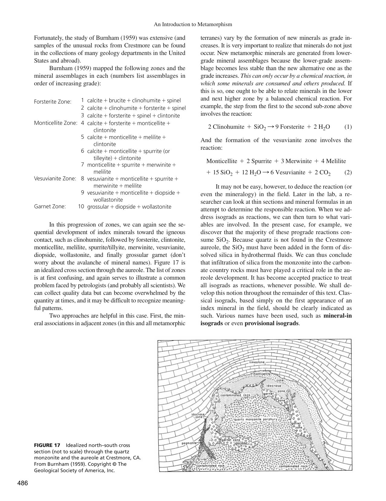

The term charnockite holds a celebrated position in Indian and global petrology. It was introduced in 1893 and formally established in 1900 by Sir Thomas Henry Holland of the Geological Survey of India, named in honor of Job Charnock (the traditional founder of Calcutta), whose tombstone in St. John's Churchyard, Kolkata, was carved from a distinctive dark hypersthenic rock quarried from St. Thomas Mount in Pallavaram, Chennai (Madras).
In modern metamorphic and igneous classification (IUGS; Winter, 2014, pp. 492–496), charnockite (sensu stricto) is formally defined as a hypersthene-bearing granite—a quartzo-feldspathic plutonic or high-grade metamorphic rock formed under dry, anhydrous Granulite Facies conditions, characterized by the pathognomonic coexistence of orthopyroxene (hypersthene / enstatite) with quartz, alkali feldspar (perthite/microcline), and plagioclase.

In the lower continental crust ($T = 750\text{--}900^\circ\text{C}, P = 6\text{--}10\text{ kbar}$), hydrous biotite mica breaks down in the presence of quartz via the classic granulite dehydration reaction:
$$\text{K(Mg,Fe)}_3\text{AlSi}_3\text{O}_{10}(\text{OH})_2\text{ (Biotite)} + 3\text{SiO}_2\text{ (Quartz)} \xrightarrow{\Delta T} 3\mathbf{\text{(Mg,Fe)SiO}_3\text{ (Hypersthene)}} + \text{KAlSi}_3\text{O}_8\text{ (K-feldspar)} + \text{H}_2\text{O}\uparrow$$The liberation of orthopyroxene (hypersthene) marks the terminal destruction of amphibolite-facies hydrous assemblages and entry into the granulite facies charnockite suite.
In southern India (Kabbaldurga quarry), Pichamuthu (1960) and Janardhan et al. (1979) discovered patchy, in-situ conversions of grey amphibolite-facies Peninsular Gneiss into greasy, brown charnockite along fracture networks. This landmark discovery demonstrated that charnockitization can occur via carbonic metamorphism: influx of mantle-derived, supercritical carbon dioxide ($\text{CO}_2$) flushes through ductile fractures, driving water activity to very low levels ($a_{\text{H}_2\text{O}} \ll 0.1$), thereby dehydrating biotite and hornblende into hypersthene at subsolidus temperatures.
Correct: By universal scientific definition in igneous and metamorphic petrology (Holland, 1900; Winter, 2014, p. 493; Bangar, p. 87; Mahapatra, p. 140), charnockite is the exact and authoritative name for granulite-facies quartzo-feldspathic plutonic and metamorphic rocks characterized fundamentally by the presence of orthopyroxene (hypersthene).
Incorrect: An orthoamphibolite is a metamorphic rock formed by the medium-grade (amphibolite facies) metamorphism of an igneous mafic protolith (such as basalt, dolerite, or gabbro). It is composed predominantly of green-to-black hornblende amphibole and calcic plagioclase. It is mafic (not quartzo-feldspathic), belongs to the amphibolite facies (not granulite facies), and is characterized by amphibole rather than hypersthene.
Incorrect: A paramphibolite is an amphibolite-facies rock derived from the metamorphism of a sedimentary protolith (such as a calcareous shale, marl, or impure dolomitic mudstone). Like orthoamphibolite, it is dominated by hornblende and plagioclase, entirely distinct from hypersthene-bearing charnockite.
Incorrect: Greenalite is a specific, hydrous iron silicate mineral belonging to the serpentine group ($\text{Fe}^{2+}_3\text{Si}_2\text{O}_5(\text{OH})_4$). It occurs as microscopic green ooids and peloids in unmetamorphosed or low-grade Precambrian banded iron formations (BIFs). It is neither a rock type nor associated with granulite-facies charnockites.
| Charnockite Series Member | Plutonic Equivalence | Essential Mineralogy | $\text{SiO}_2$ Range | Color Index ($M'$) |
|---|---|---|---|---|
| Charnockite (sensu stricto) | Hypersthene Granite | Quartz + K-feldspar (perthite) + Plagioclase + Hypersthene | $> 70\text{ wt}\%$ (Felsic / Acidic) | $< 10\text{--}15$ (Leucocratic) |
| Enderbite | Hypersthene Tonalite / Granodiorite | Quartz + Plagioclase (dominant over K-feldspar) + Hypersthene | $65\text{--}72\text{ wt}\%$ (Felsic) | $10\text{--}20$ |
| Opdalite / Mangerite | Hypersthene Granodiorite / Monzonite | Plagioclase + K-feldspar (subequal) + Quartz + Hypersthene $\pm$ Diopside | $60\text{--}66\text{ wt}\%$ (Intermediate) | $15\text{--}30$ (Mesocratic) |
| Norite (Basic Charnockite) | Hypersthene Gabbro | Calcic Plagioclase + Hypersthene + Augite / Diopside (Quartz absent) | $48\text{--}54\text{ wt}\%$ (Basic / Mafic) | $> 40\text{--}70$ (Melanocratic) |
Under a petrographic microscope, how does a geologist definitively identify hypersthene in a charnockite thin section, distinguishing it from clinopyroxene (augite)?
Solution: - Hypersthene (Orthopyroxene): Orthorhombic ($Pbca$); exhibits diagnostic vivid trichroic pleochroism ($X = \text{pink/salmon red}$, $Y = \text{yellowish}$, $Z = \text{pale green}$), parallel (straight) extinction ($0^\circ$) relative to the $\{110\}$ cleavage in prismatic sections, and low first-order birefringence ($\delta \approx 0.010\text{--}0.015$). - Augite (Clinopyroxene): Monoclinic ($C2/c$); exhibits pale green color without strong pink pleochroism, inclined extinction ($Z \wedge c = 38\text{--}48^\circ$), and much higher upper second-order birefringence ($\delta \approx 0.025$).
What is an "enderbite" and how does its modal feldspar proportion differ from charnockite sensu stricto?
Solution: In the charnockite series, an enderbite (named after Enderby Land, Antarctica) is the hypersthene-bearing equivalent of a tonalite. In charnockite sensu stricto, alkali feldspar (K-feldspar/perthite) is dominant or subequal to plagioclase. In enderbite, plagioclase feldspar (typically oligoclase/andesine, $\text{An}_{25\text{--}40}$) constitutes $> 65\text{ to } 90\%$ of the total feldspar volume, with K-feldspar reduced to an accessory phase.
Explain the role of carbon dioxide ($\text{CO}_2$) flushing in lowering water activity ($a_{\text{H}_2\text{O}}$) during the genesis of charnockites in southern India.
Solution: Under normal fluid-present conditions, granitic crust melts at $650^\circ\text{C}$ in the presence of pure $\text{H}_2\text{O}$ ($a_{\text{H}_2\text{O}} = 1.0$). In southern India (Eastern Ghats and Southern Granulite Terrane), juvenile mantle degassing or deep basaltic underplating introduced large volumes of supercritical $\text{CO}_2$. Because $\text{CO}_2$ is immiscible with silicate melt and displaces water, water activity plummeted to $a_{\text{H}_2\text{O}} \le 0.1\text{ to } 0.3$. This severe dehydration stabilized orthopyroxene (hypersthene) at high temperatures ($800\text{--}900^\circ\text{C}$) without inducing pervasive large-scale anatectic melting.
Why do charnockites frequently display a dark, greasy olive-brown macroscopic color even when their chemical composition is $75\%\text{ SiO}_2$ (felsic granite)?
Solution: The dark, greasy appearance is an optical absorption effect. At granulite facies conditions, extreme thermal and fluid pressure generates billions of sub-micron inclusions of liquid $\text{CO}_2$, microscopic cryptocrystalline graphite films, and ultra-fine iron oxide/rutile exsolution lamellae dispersed within the crystal lattices of quartz and feldspar. These micro-inclusions scatter and absorb incident light internally, mimicking the dark visual appearance of a mafic rock.
What is a "khondalite" and what is its regional geological relationship with charnockites in the Eastern Ghats Mobile Belt of Odisha?
Solution: A khondalite (named by T.L. Walker after the Khond tribes of Odisha) is a high-grade garnet-sillimanite-graphite metapelitic schist/gneiss ($\pm\text{ quartz, K-feldspar}$). In the Eastern Ghats Mobile Belt of Odisha and Andhra Pradesh, khondalites represent the aluminous sedimentary cover sequence (metapelites) that was co-metamorphosed with intrusive and basement charnockites under ultra-high-temperature (UHT) granulite-facies conditions ($T > 900\text{--}1000^\circ\text{C}$).
State the mineralogical difference between an "amphibolite" and a "two-pyroxene granulite" (basic charnockite) derived from the exact same basaltic protolith.
Solution: - Amphibolite (Amphibolite Facies, $T \approx 500\text{--}650^\circ\text{C}$): Dominated by hydrous calcic hornblende + plagioclase $\pm$ quartz $\pm$ almandine garnet. - Two-Pyroxene Granulite (Granulite Facies, $T > 750^\circ\text{C}$): Hornblende has completely dehydrated via the reaction: $\text{Hornblende} + \text{Quartz} \rightarrow \mathbf{\text{Hypersthene (Opx)}} + \mathbf{\text{Diopside/Augite (Cpx)}} + \text{Plagioclase} + \text{H}_2\text{O}$.
Why are charnockites considered premier dimension stones and heavy railway ballast materials in civil engineering?
Solution: Because charnockites crystallized under extreme granulite pressures ($P > 7\text{--}9\text{ kbar}$), their constituent quartz, feldspar, and pyroxene crystals form an ultra-dense, completely interlocking granoblastic mosaic with virtually zero porosity ($< 0.2\%$) and no planar cleavage planes. This imparts exceptional unconfined compressive strength ($\sigma_c > 200\text{--}300\text{ MPa}$), high abrasion resistance, and negligible water absorption, making them superior to standard granites for railway ballast and polished monument facings.
What is "leptynite" and how is it related to charnockite in Indian geology?
Solution: A leptynite is a light-colored, leucocratic granulite composed of quartz, microperthitic K-feldspar, and pink almandine-pyrope garnet, with orthopyroxene (hypersthene) being completely absent or retrogressed. In the Eastern Ghats and Tamil Nadu, leptynites form by the retrograde hydration or garnet-consuming recrystallization of charnockite along shear zones.